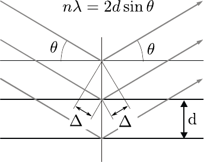
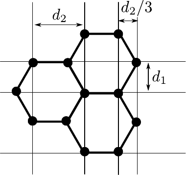
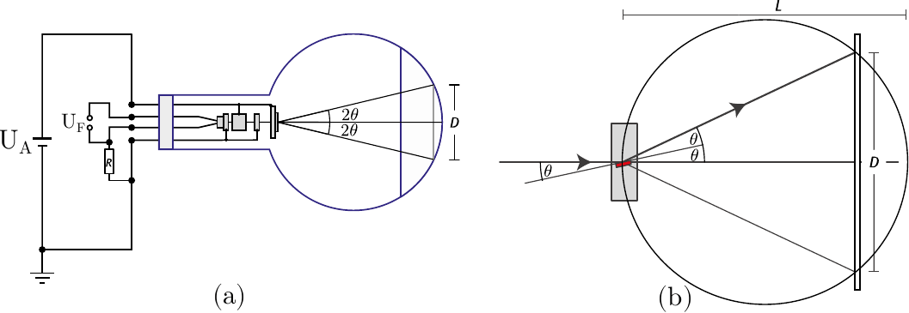
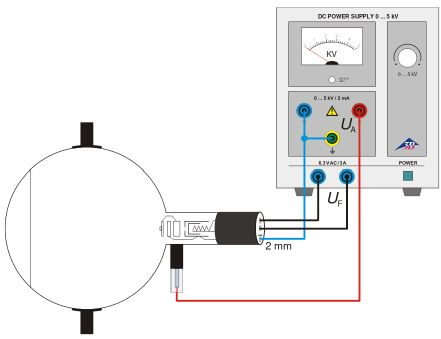
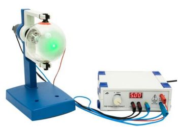

La difracción de electrones en una lámina de grafito policristalino permite comprobar la naturaleza ondulatoria del electrón. En la pantalla fluorescente del tubo de difracción de electrones se observan dos anillos de difracción alrededor de un punto luminoso grande en dirección del rayo. Estos anillos se atribuyen a la difracción de los electrones que cumplen con la condición de Bragg en la red cristalina de los microcristales en la lámina de grafito. La observación es comparable con el resultado de la difracción de rayos X en polvo de cristales según Debye-Scherrer.
En 1924 Louis de Broglie postuló la hipótesis de que las partículas también tienen propiedades ondulatorias, siendo la longitud de onda inversamente proporcional a la cantidad de movimiento de la misma. Sus reflexiones fueron comprobadas por C. Davisson y L. Germer cuando realizaron la difracción de electrones en níquel cristalino. De Broglie estableció la dependencia de la longitud de onda de una partícula con la cantidad de movimiento mediante la relación
con la constante de Planck. Para los electrones acelerados mediante una tensión de aceleración en un tubo de vacío, esta ecuación puede expresarse de la forma:
con la masa del electrón y la carga del electrón.
En el experimento, se demuestra la naturaleza ondulatoria de los electrones en un tubo de vidrio vacío, realizando una difracción en un grafito policristalino. En la pantalla fluorescente del tubo de vidrio se observan anillos de difracción alrededor de un punto grande central. El diámetro de los anillos depende de la tensión de aceleración. Dichos anillos son producidos por la difracción de los electrones en los planos de rejilla de los microcristales, que cumplen con la condición de Bragg
donde es el ángulo de Bragg, el orden de difracción y la distancia entre dos planos reticular del cristal tal cómo se ilustra en la figura 7.1 (a).
 (a) (b) |
Figura 7.1: En (a): esquema de los rayos difractados por los planos de la red de policristalina. En (b): Esquema de la estructura de la red cristalina.
El diámetro del anillo de difracción se relaciona con el ángulo de Bragg usando la geometría del aparato y alguna aproximación:
donde cm es la distancia entre la lámina de gráfito y la pantalla del tubo (ver figura 7.2).

Figura 7.2: Esquema de la difracción de electrones por la red cristalina en el tubo de vacío.
Como el grafito muestra una estructura cristalina con dos distancias entre planos cristalinos m y m (ver figura 7.1 (b)), se observan en el primer orden de difracción (n = 1) dos anillos de difracción con los diámetros y .
Partiendo de los diámetros de ambos anillos de difracción y de las distancias entre los planos de rejilla se puede determinar la longitud de onda aplicando la condición de Bragg. Para ángulos de apertura pequeños se tiene:
para . De esta forma se comparan las longitudes de onda con las calculadas previamente.
La película de grafito de la rejilla de difracción sólo tiene algunas capas moleculares de espesor y, por tanto, se puede destruir ante una corriente mayor a 0,2 mA.Durante la experimentación, se debe controlar la corriente anódica, al igual que la película de grafito. En caso de que se queme la rejilla de grafito, o de una corriente de emisión superior a 0,2 mA, se debe desconectar inmediatamente la tensión anódica
Para evitar quemar la superficie fluorescente del tubo con el rayo de electrones, es conveniente bajar la alta tensión a cero entre cada medida.
 (a) (b) |
Figura 7.3: Montaje experimental.
Medir los diametros y en función de las tensiones de anodo marcadas en la tabla siguiente
| (kV) | (m) | (m) | (m) | (m) | (m) | (m) |
| 3 | ||||||
| 3.5 | ||||||
| 4 | ||||||
| 4.5 | ||||||
| 5 | ||||||